Short‑form feeds train us to glance and scroll. We wanted to find out whether slow looking — prolonged, intentional observation — could help young adults in Berlin slow down, and whether the city’s street art and graffiti could be the way in.
An installation at Berlin Design Week where visitors practised slow looking with projected street‑art photographs and printed prompts — plus a strategy for where the project could go next.
After desk research and informal chats, I wrote a problem statement: young adults in Berlin who consume a lot of short‑form entertainment find it hard to be in a mindful state. It focused the group — and showed what we didn’t know yet, so I turned each part of it into a research question.
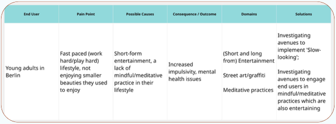
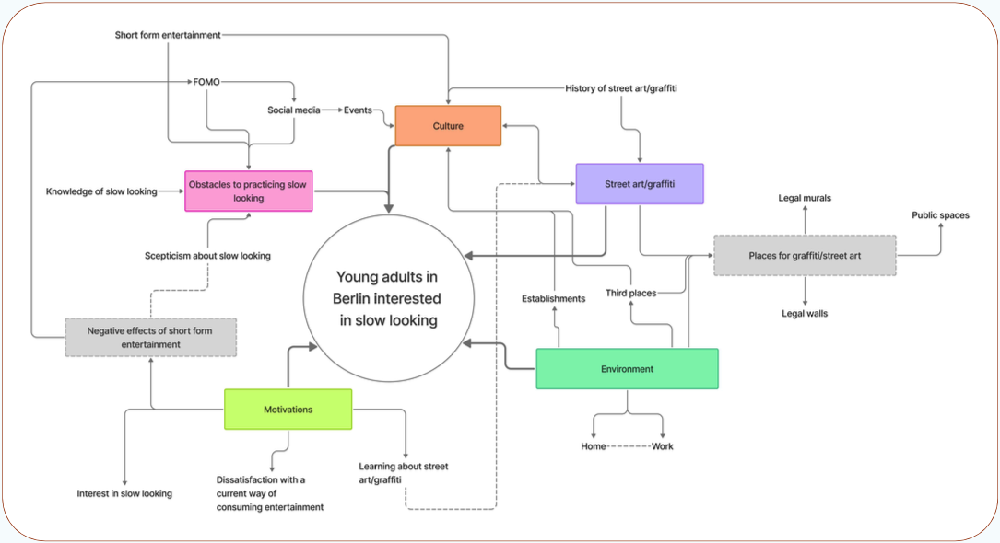
With the group I drafted a futures cone — possible, plausible, probable and preferable outcomes. It helped us agree our values, how we’d react to setbacks, and which stakeholders and funding we’d need to keep the project going. Milestones then kept deadlines visible, from conference submissions to street festivals.
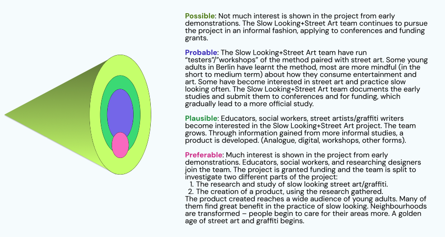
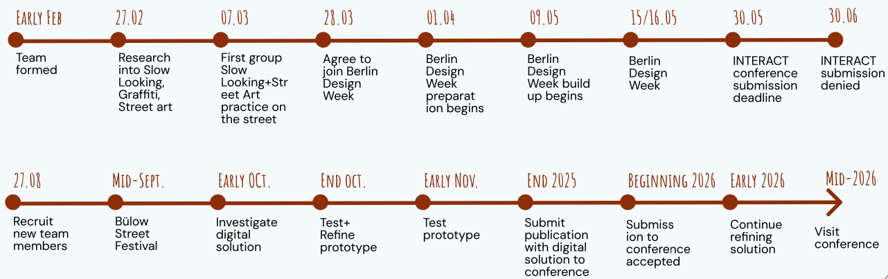
Once our place at Berlin Design Week was confirmed, I storyboarded a visitor’s journey and set goals from it: visitors should understand and practise the method, think more about the artwork than they otherwise would, and leave us feedback. I then sketched floor plans for the room to discuss with the team — the starred layout is the one we built.
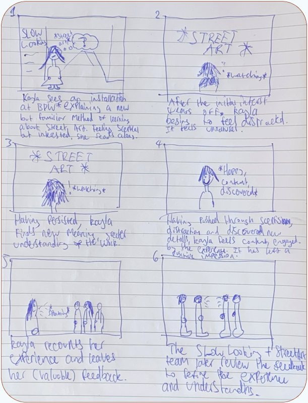
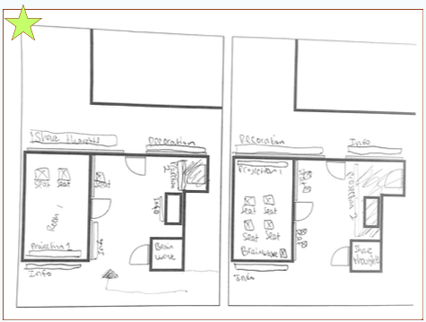
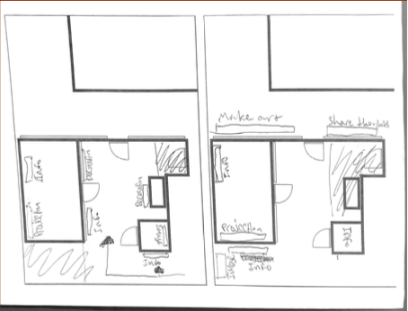
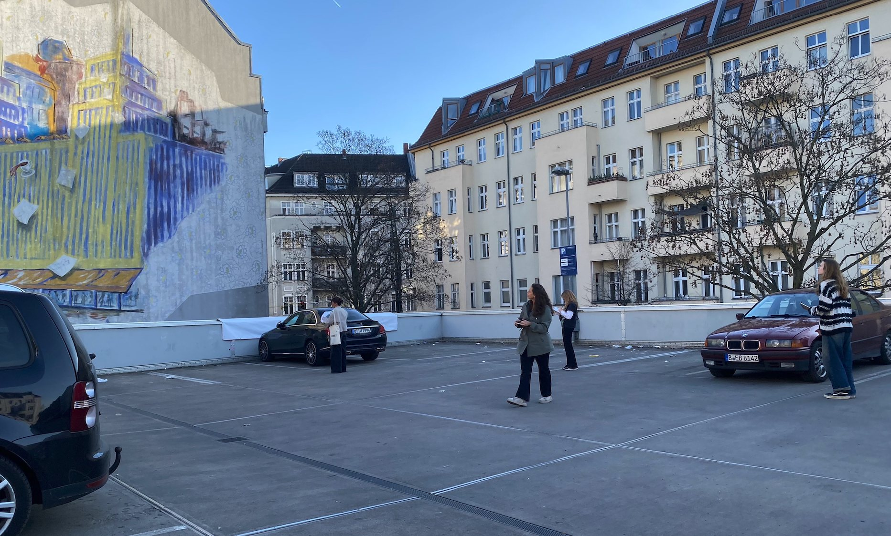
The team spent 30 minutes in front of a mural, looking from different positions. It shaped how we simulated the experience indoors — including the prompt cards that guided visitors.
I documented the installation in photo and video for future stakeholders and conference applications, and helped choose the projected photographs — immersive enough to show the surroundings, focused enough to hold attention on a single piece.
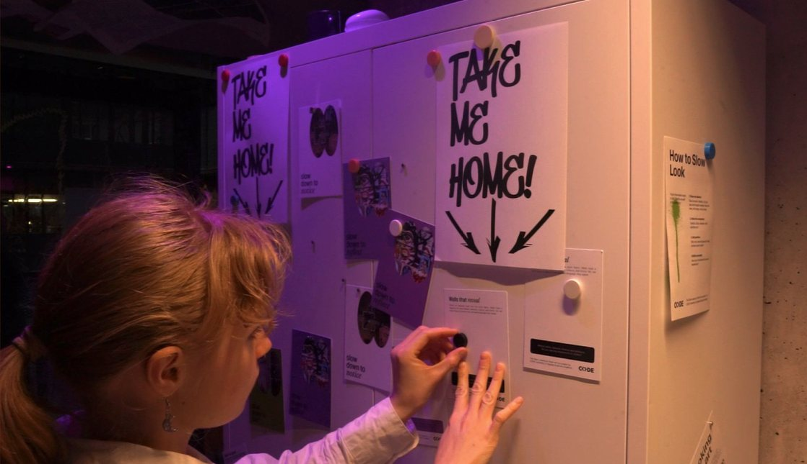
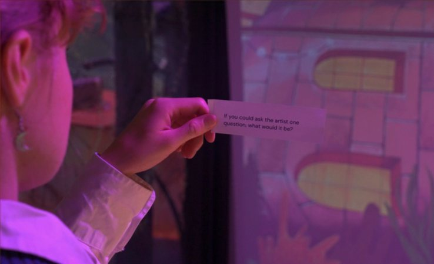
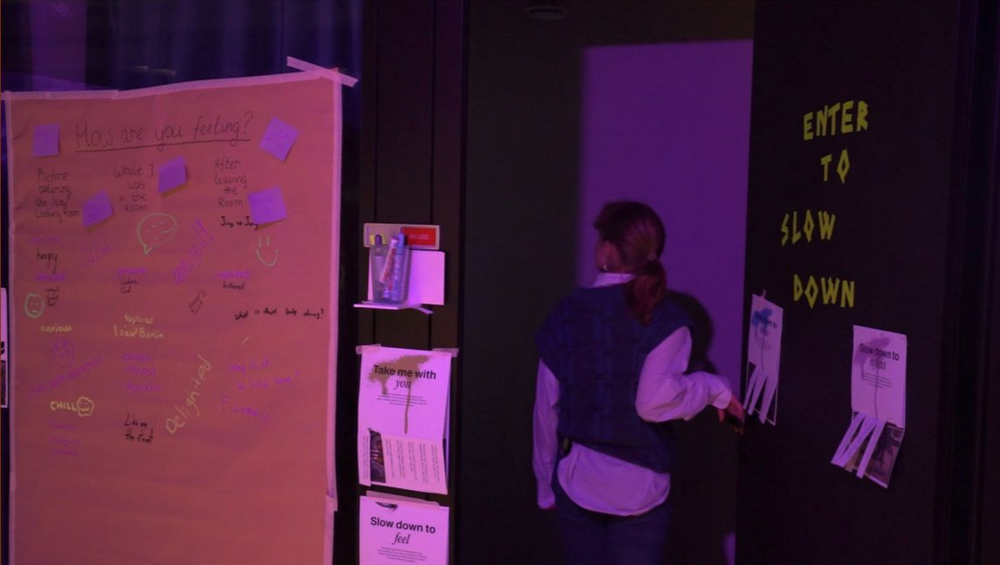
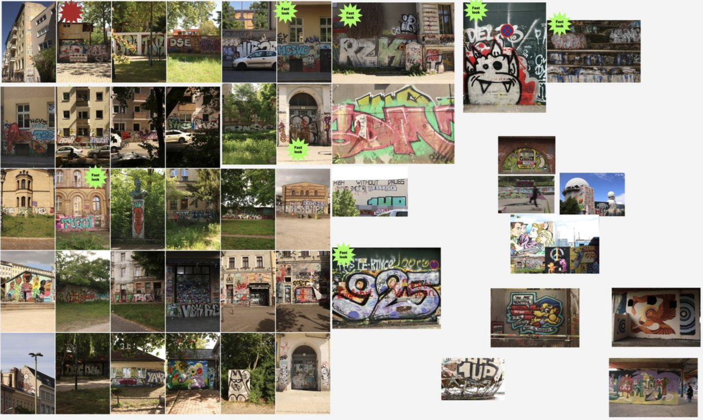
Don’t narrow too early. The problem statement named a specific group and city before research had confirmed it applied.
Make maps specific. The system map would have been more useful charting existing slow‑looking practices, stakeholders and funding.
Storyboards carry assumptions. Ours drew on our own experience of slow looking — testing with visitors earlier would have challenged it.
The group went on to explore a digital version of the project. When I started my bachelor’s thesis I stepped back and handed all assets over to the team.